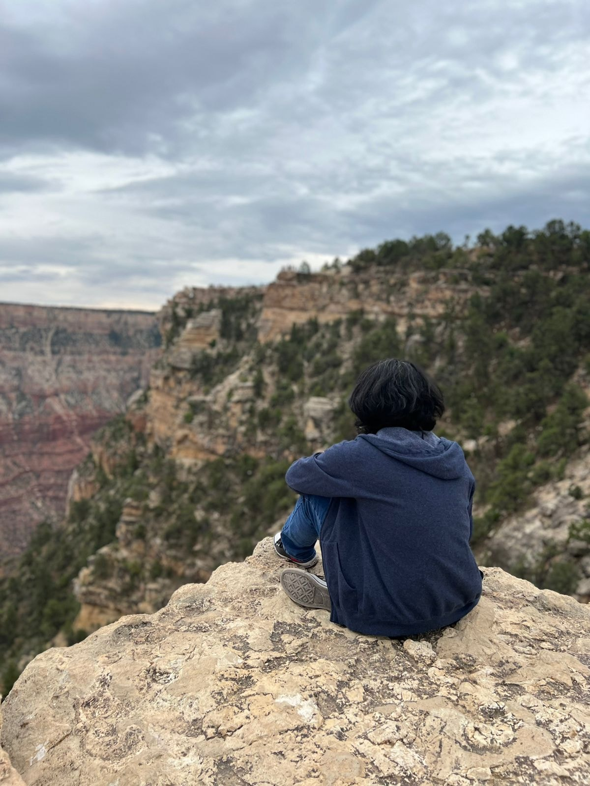

Portada
Hola, mi nombre es Christopher Alberto, llamame chris, pero no me llames tarde para cenar :D, tengo 22 años y soy de Ciudad Obregon, Sonora
En esta pagina les compartire datos sobre mi (8.
Hobbies
Escuchar música: Desde muy pequeño me ha llamado mucho la atencion la musica, es uno de mis hobbies actuales favoritos, suelo disfrutar mucho de mis artistas favoritos, sin embargo, no me desagrada escuchar otro tipo de musica que no son de mi agrada, hasta cierto punto jajaja. Tambien se tocar guitarra muy basico desde la secundaria, al igual que el ukelele :DD.
Ver videos: Con este pasatiempo es donde mas suelo pasar muchas horas, el ver videos mientras hago tareas, comida, etc. Suelo ver videos de reseñas ya sean de videojuegos o peliculas, tambien suelo ver videos IRL (In Real Life) donde me gusta conocer ciertas partes del mundo y sus culturas.
Jugar videojuegos: Tengo desde los 5 años jugando videojuegos, sin embargo, actualmente es uno de mis pasatiempos que no suelo gastar mucho tiempo, debido a que estoy en la escuela, pero cuando tengo la oportunidad, trato de aprovecharlo y desconectar del exterior. He jugado inifinidad de juegos y completandolos en su totalidad brindandome horas de diversion y hasta enseñanzas hasta cierto punto. Me suelen gustar juegos de aventura, accion, rpg, ciencia ficcion, etc.
Series y Peliculas Favoritos

Trilogia Volver Al Futuro
Esta es una de mis trilogias del cine favoritas, desde el carisma desde los actores, hasta la idea principal de viajes en el tiempo para la epoca en que salio la pelicula, los efectos simplemente me volaron la cabeza.

Stranger Things
Esta es una de mis series actuales favoritas, salio en 2016 y la empece a ver en 2017, me parecio bastante buena, ofreciendo una gran variedad de personajes junto con sus desarollos atraves de las temporadas, siendo la 4ta temporada mi favorita hasta el momento y a la espera de la 5ta :D.

Spider Man 2 (2002)
Esta es mi pelicula favorita del hombre araña, la vi cuando tenia apenas 5 años y me encanto, tiene momentos muy memorables como la pelea del hombre araña y doctor otto, la redencion de este ultimo y la revelacion de identidad del hombre araña ante Harry Osborne.

Avenger: Infinity War
Esta pelicula le tengo un cariño muy especial, debido a que creci viendo las peliculas del UCM, desde Iron Man 1 hasta esta pelicula, la cual concluye con todo el arco del Inifinito. Despues de 10 años de construccion teniamos la union de todos los heroes en una sola pelicula, dando como resultado una de las mejores peliculas de superheroes hasta la fecha y un evento en el cine que solo se repitio en su secuela (ENDGAME)

Logan
Esta pelicula es una de mis favoritas dentro del universo de X-men, ya que es la despedida perfecta, de un personaje tan querido por la comunidad, Hugh Jackman daria su ultima interpretacion de Wolverine dentro del univero de Fox, regalandonos momentos emotivos dentro de esta haciendo llorar a mas de uno.
Contacto
Si quieres invitarme a algo divertido, me puedes contactar como: chris012203@gmail.com